<!doctype html>
<html lang="es">
<head>
  <meta charset="utf-8">
  <meta name="viewport" content="width=device-width, initial-scale=1">
  <title>Resumen — Development of alternative photocatalysts to TiO₂: Challenges and opportunities</title>
  <style>
  @import url('https://fonts.googleapis.com/css2?family=Playfair+Display:ital,wght@0,600;0,700;1,400&family=Lora:ital,wght@0,400;0,600;1,400&family=Inter:wght@400;500;600&display=swap');

  *, *::before, *::after { box-sizing: border-box; margin: 0; padding: 0; }

  :root {
    --paper:      #fafaf8;  --surface:    #ffffff;  --panel:      #ffffff;
    --ink:        #18202a;  --muted:      #5a6472;  --line:       #d8dde4;
    --accent:     #174a7e;  --accent-h:   #0d3259;  --gold:       #b8860b;
    --teal:       #0a6858;  --soft-blue:  #eef3fb;  --soft-gold:  #fdf6e3;
    --soft-teal:  #e6f4f1;  --warn:       #fff8e1;
    --nav-h:      44px;     --max-w:      960px;
  }

  html { scroll-behavior: smooth; }
  body { font-family: 'Lora', Georgia, serif; font-size: 16px; line-height: 1.75;
         background: var(--paper); color: var(--ink); }

  /* Nav */
  .top-nav { position: sticky; top: 0; z-index: 200; height: var(--nav-h);
    background: var(--accent); display: flex; align-items: center; gap: 12px;
    padding: 0 20px; box-shadow: 0 2px 8px rgba(0,0,0,.25); }
  .top-nav a.back { color: rgba(255,255,255,.85); text-decoration: none;
    font-family: 'Inter', sans-serif; font-size: 12px; font-weight: 500;
    display: flex; align-items: center; gap: 6px; padding: 5px 12px;
    border: 1px solid rgba(255,255,255,.3); border-radius: 20px; transition: background .15s; }
  .top-nav a.back:hover { background: rgba(255,255,255,.15); }
  .top-nav .nav-title { color: rgba(255,255,255,.6); font-family: 'Playfair Display', serif;
    font-size: 13px; white-space: nowrap; overflow: hidden; text-overflow: ellipsis; }
  .top-nav .journal-name { margin-left: auto; color: rgba(255,255,255,.5);
    font-family: 'Inter', sans-serif; font-size: 11px; font-style: italic; white-space: nowrap; }

  /* Header */
  header { background: linear-gradient(160deg, #0d2a4a 0%, #174a7e 60%, #1a5c8a 100%);
    color: #fff; padding: 52px 28px 44px; border-bottom: 4px solid var(--gold); }
  header .inner { max-width: var(--max-w); margin: 0 auto; }
  .journal-stripe { font-family: 'Inter', sans-serif; font-size: 10px; font-weight: 600;
    letter-spacing: 2.5px; text-transform: uppercase; color: var(--gold); margin-bottom: 18px;
    display: flex; align-items: center; gap: 10px; }
  .journal-stripe::after { content: ''; flex: 1; height: 1px; background: rgba(184,134,11,.4); }
  h1 { font-family: 'Playfair Display', serif; font-size: clamp(22px, 4vw, 40px);
    font-weight: 700; line-height: 1.15; letter-spacing: -.3px; margin-bottom: 16px; }
  .subtitle { font-family: 'Lora', serif; font-style: italic; font-size: 16px;
    color: rgba(255,255,255,.78); max-width: 820px; margin-bottom: 28px; }
  .meta { display: grid; grid-template-columns: repeat(auto-fit, minmax(210px, 1fr));
    gap: 10px; font-family: 'Inter', sans-serif; font-size: 12.5px; color: rgba(255,255,255,.8); }
  .meta div { background: rgba(255,255,255,.08); border: 1px solid rgba(255,255,255,.15);
    padding: 10px 14px; border-radius: 6px; }
  .meta div strong { color: var(--gold); display: block; margin-bottom: 2px;
    font-size: 10px; text-transform: uppercase; letter-spacing: 1px; }
  .meta a { color: rgba(255,255,255,.7); }
  .meta a:hover { color: #fff; }

  /* Layout */
  main, .inner { max-width: var(--max-w); margin: 0 auto; }
  main { padding: 40px 24px 80px; }
  section { margin-bottom: 48px; }

  /* Typography */
  h2 { font-family: 'Playfair Display', serif; font-size: 22px; font-weight: 700;
    color: var(--accent); margin: 0 0 18px; padding-bottom: 10px;
    border-bottom: 2px solid var(--line); position: relative; }
  h2::before { content: ''; position: absolute; bottom: -2px; left: 0;
    width: 48px; height: 2px; background: var(--gold); }
  h3 { font-family: 'Playfair Display', serif; font-size: 17px; color: var(--ink); margin: 0 0 8px; }
  p { margin: 0 0 16px; }
  ul, ol { padding-left: 24px; margin: 0 0 16px; }
  li { margin-bottom: 6px; }
  a { color: var(--teal); }
  a:hover { color: var(--accent); }
  code { font-family: monospace; background: #f0f4f8; padding: 2px 5px; border-radius: 3px; font-size: 14px; }
  pre { background: #1a2332; color: #e2e8f0; padding: 16px 20px; border-radius: 8px;
    overflow-x: auto; margin: 0 0 16px; font-size: 13px; }
  blockquote { border-left: 4px solid var(--accent); padding: 12px 20px;
    background: var(--soft-blue); margin: 0 0 16px; border-radius: 0 6px 6px 0; }

  .lead { font-size: 17px; font-style: italic; color: #2a3540; background: var(--soft-blue);
    border-left: 4px solid var(--accent); padding: 22px 24px; border-radius: 0 8px 8px 0;
    margin-bottom: 24px; line-height: 1.7; }
  .tag { display: inline-block; margin: 0 6px 8px 0; padding: 4px 11px; border-radius: 20px;
    background: var(--soft-blue); color: var(--accent); border: 1px solid #c2d2ea;
    font-family: 'Inter', sans-serif; font-size: 11.5px; font-weight: 600; letter-spacing: .2px; }

  .grid { display: grid; grid-template-columns: repeat(auto-fit, minmax(220px, 1fr));
    gap: 16px; margin: 18px 0; }
  .card { background: var(--surface); border: 1px solid var(--line); border-radius: 8px;
    padding: 18px 20px; box-shadow: 0 1px 4px rgba(0,0,0,.05); }
  .card h3 { color: var(--accent); font-size: 15px; margin-bottom: 8px; }
  .important { background: var(--soft-gold); border-left: 4px solid var(--gold);
    padding: 18px 22px; border-radius: 0 8px 8px 0; margin-bottom: 16px; }

  table { width: 100%; border-collapse: collapse; background: var(--surface);
    border: 1px solid var(--line); margin: 20px 0; font-family: 'Inter', sans-serif;
    font-size: 13.5px; border-radius: 8px; overflow: hidden; box-shadow: 0 1px 4px rgba(0,0,0,.06); }
  th, td { border: 1px solid var(--line); padding: 11px 14px; text-align: left; vertical-align: top; }
  th { background: var(--accent); color: #fff; font-weight: 600; font-size: 12px;
    letter-spacing: .4px; text-transform: uppercase; }
  tr:nth-child(even) td { background: #f7f9fc; }

  /* Figures */
  .figure-list { display: flex; flex-direction: column; gap: 32px; }
  figure { margin: 0; background: var(--surface); border: 1px solid var(--line);
    border-radius: 10px; overflow: hidden; box-shadow: 0 2px 12px rgba(0,0,0,.07);
    transition: box-shadow .2s; }
  figure:hover { box-shadow: 0 6px 24px rgba(0,0,0,.12); }
  @media (min-width: 680px) {
    figure { display: grid; grid-template-columns: 56% 44%;
      grid-template-rows: auto 1fr; min-height: 220px; }
    figure > img { grid-column: 1; grid-row: 1 / 3; }
    figure > figcaption { grid-column: 2; grid-row: 1; }
    figure > .figbody { grid-column: 2; grid-row: 2; }
  }
  figure > img { width: 100%; height: 100%; max-height: 520px; object-fit: contain;
    background: #0e1826; display: block; border-right: 1px solid var(--line); }
  @media (max-width: 679px) {
    figure > img { max-height: 280px; border-right: none; border-bottom: 1px solid var(--line); } }
  figcaption { padding: 18px 20px 10px; font-family: 'Inter', sans-serif; font-size: 12.5px;
    color: var(--muted); border-bottom: 1px solid var(--line); }
  figcaption strong { display: block; font-size: 11px; letter-spacing: 1px;
    text-transform: uppercase; color: var(--accent); margin-bottom: 5px; }
  .caption { font-family: 'Lora', serif; font-style: italic; font-size: 13px;
    color: #3a4650; line-height: 1.55; }
  .figbody { padding: 16px 20px 18px; background: var(--soft-teal);
    font-family: 'Inter', sans-serif; font-size: 13.5px; color: #1e3530;
    line-height: 1.65; border-left: 3px solid var(--teal); }
  .figbody p { margin: 0; }
  .figbody::before { content: 'Figura del paper'; display: block; font-size: 10px;
    font-weight: 600; letter-spacing: 1.2px; text-transform: uppercase;
    color: var(--teal); margin-bottom: 7px; }

  .small { color: var(--muted); font-size: 13px; }
  ::-webkit-scrollbar { width: 6px; }
  ::-webkit-scrollbar-track { background: var(--paper); }
  ::-webkit-scrollbar-thumb { background: #b0bcc8; border-radius: 3px; }

  </style>
</head>
<body>

<nav class="top-nav">
  <a href="../index.html" class="back">&#8592; Indice</a>
  <span class="nav-title" id="nav-title-text"></span>
  <span class="journal-name">ilovepappers Journal</span>
</nav>
<script>
  document.getElementById('nav-title-text').textContent =
    document.querySelector('h1') ? document.querySelector('h1').textContent.slice(0, 60) : '';
</script>

<header>
  <div class="inner">
    <div class="journal-stripe">ilovepappers Journal &middot; Resumen en Espanol</div>
    <h1>Development of alternative photocatalysts to TiO₂: Challenges and opportunities</h1>
    <p class="subtitle">Resumen en español de <strong>Development of alternative photocatalysts to TiO₂: Challenges and opportunities</strong>.</p>
    <div class="meta">
        <div><strong>Autores</strong>** M. D. Hernández-Alonso, F. Fresno, S. Suárez, J. M. Coronado (CIEMAT-PSA / IMDEA-Energía, España)</div>
        <div><strong>Revista</strong>** Energy & Environmental Science 2, 1231 (2009), DOI: 10.1039/b907933e</div>
        <div><strong>DOI / arXiv</strong><a href="https://doi.org/10.1039/b907933e" target="_blank">10.1039/b907933e</a></div>
        <div><strong>PDF local</strong><a href="../pappers/Fotocatalizadores_alternativos_TiO2_Hernandez_2009.pdf">ver PDF</a></div>
    </div>
  </div>
</header>

<main>

  <section>
    <p><strong>Autores:</strong> M. D. Hernández-Alonso, F. Fresno, S. Suárez, J. M. Coronado (CIEMAT-PSA / IMDEA-Energía, España)<br />
<strong>Revista:</strong> Energy &amp; Environmental Science 2, 1231 (2009), DOI: 10.1039/b907933e</p>
<h2>Tipo</h2>
<p><strong>Review</strong> clásico (2009) sobre fotocatalizadores <strong>alternativos a TiO₂</strong> para tres aplicaciones:</p>
<ol>
<li><strong>Water splitting</strong> (producción de H₂).</li>
<li><strong>Descontaminación y desinfección</strong> (agua, aire).</li>
<li><strong>Síntesis orgánica</strong> vía fotocatálisis.</li>
</ol>
<h2>Idea central</h2>
<p>TiO₂ es el fotocatalizador dominante desde los 70s por su balance eficiencia / costo / estabilidad, pero tiene <strong>una limitación crítica</strong>:</p>
<ul>
<li><strong>Band gap ~3.2 eV</strong> → solo activo en UV (≤ 6% del espectro solar).</li>
<li>Cinética moderada → no apto para procesos de alto throughput.</li>
</ul>
<p>El paper revisa qué otros materiales se han propuesto y dónde funcionan mejor que TiO₂.</p>
<hr />
<h2>Familias de fotocatalizadores alternativos cubiertas</h2>
<h3>Óxidos de metales con d⁰</h3>
<ul>
<li><strong>Ta⁵⁺, Nb⁵⁺</strong> — buenos para water splitting.</li>
<li>Estructuras layered tipo K₄Nb₆O₁₇, óxidos perovskita.</li>
</ul>
<h3>Óxidos / nitruros de elementos con d¹⁰</h3>
<ul>
<li><strong>Ga, In, Bi, Sb</strong> — algunos extienden absorción al visible.</li>
</ul>
<h3>Semiconductores reconsiderados</h3>
<ul>
<li><strong>ZnO</strong> — competidor histórico de TiO₂, ahora recuperado en aplicaciones específicas.</li>
<li><strong>CdS</strong> — descartado por fotocorrosión, ahora viable en nano-formato con protección.</li>
</ul>
<h3>No-semiconductores</h3>
<ul>
<li><strong>Zeolitas intercambiadas</strong> con cationes activos.</li>
</ul>
<h3>Sulfuros y nitruros de metales</h3>
<ul>
<li>Activos en el visible — relevantes para usos solares.</li>
</ul>
<hr />
<h2>Tres aplicaciones, tres ganadores diferentes</h2>
<table>
<thead>
<tr>
<th>Aplicación</th>
<th>Mejor candidato</th>
</tr>
</thead>
<tbody>
<tr>
<td>Water splitting H₂</td>
<td>óxidos d⁰ (Ta, Nb), oxynitruros</td>
</tr>
<tr>
<td>Descontaminación / desinfección</td>
<td>TiO₂ sigue compitiendo bien</td>
</tr>
<tr>
<td>Síntesis orgánica selectiva</td>
<td>semiconductores nanoestructurados con tuning band gap</td>
</tr>
</tbody>
</table>
<hr />
<h2>Conexiones</h2>
<ul>
<li>Tema <strong>off-topic</strong> respecto a tu trabajo principal en MD / defectos / irradiación.</li>
<li>El archivo era <code>test2.pdf</code> — quizás quedó del pipeline de pruebas de extracción de figuras.</li>
<li>Si no te interesa fotocatálisis, considerá si vale mantenerlo en la carpeta. Lo dejo renombrado por si lo necesitás para una cita lateral.</li>
</ul>
  </section>

  <section>
    <h2>Figuras del Paper (15)</h2>
    <div class="figure-list">
        <figure>
          
          <figcaption>
            <strong>FIG_001 · pagina 2</strong>
            <p class="caption">Silvia Surez</p>
          </figcaption>
          <div class="figbody"><p>Silvia Surez</p></div>
        </figure>

        <figure>
          
          <figcaption>
            <strong>FIG_002 · pagina 2</strong>
            <p class="caption">Mara D : Hernndez -Alonso</p>
          </figcaption>
          <div class="figbody"><p>Mara D : Hernndez -Alonso</p></div>
        </figure>

        <figure>
          
          <figcaption>
            <strong>FIG_003 · pagina 2</strong>
            <p class="caption">Juan M : Coronado</p>
          </figcaption>
          <div class="figbody"><p>Juan M : Coronado</p></div>
        </figure>

        <figure>
          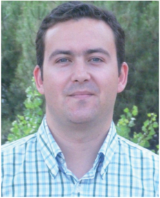
          <figcaption>
            <strong>FIG_004 · pagina 2</strong>
            <p class="caption">Fernando Fresno</p>
          </figcaption>
          <div class="figbody"><p>Fernando Fresno</p></div>
        </figure>

        <figure>
          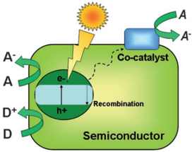
          <figcaption>
            <strong>FIG_005 · pagina 3</strong>
            <p class="caption">Fig. 2 Pictorial diagram showing the main events of photocatalysis over semiconductors.</p>
          </figcaption>
          <div class="figbody"><p>Fig. 2 Pictorial diagram showing the main events of photocatalysis over semiconductors.</p></div>
        </figure>

        <figure>
          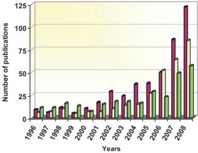
          <figcaption>
            <strong>FIG_006 · pagina 3</strong>
            <p class="caption">Fig. 1 Annual evolution of the number of publications devoted to photocatalysis with alternative materials to TiO2. ZnO ( ), sulfides ( ) and mixed oxides containing Nb, V, Ti or Ta ( ). Data source: ISI web of knowledge.</p>
          </figcaption>
          <div class="figbody"><p>Fig. 1 Annual evolution of the number of publications devoted to photocatalysis with alternative materials to TiO2. ZnO ( ), sulfides ( ) and mixed oxides containing Nb, V, Ti or Ta ( ). Data source: ISI web of knowledge.</p></div>
        </figure>

        <figure>
          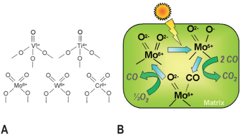
          <figcaption>
            <strong>FIG_007 · pagina 4</strong>
            <p class="caption">Fig. 3 Examples of single site photocatalytic centres (A), and pictorial diagram (B) showing the mechanism of CO photo-oxidation over singlesite photocatalysts with Mo centres. (Based on ref. 28).</p>
          </figcaption>
          <div class="figbody"><p>Fig. 3 Examples of single site photocatalytic centres (A), and pictorial diagram (B) showing the mechanism of CO photo-oxidation over singlesite photocatalysts with Mo centres. (Based on ref. 28).</p></div>
        </figure>

        <figure>
          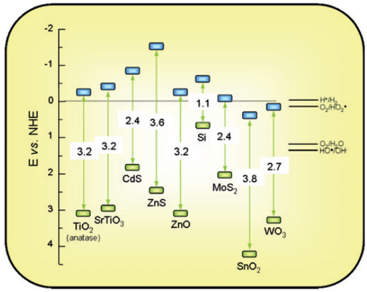
          <figcaption>
            <strong>FIG_008 · pagina 5</strong>
            <p class="caption">Fig. 4 Band gaps (eV) and redox potentials, using the normal hydrogen electrode (NHE) as a reference, for several semiconductors (Based on the data in ref. 8,10-12).</p>
          </figcaption>
          <div class="figbody"><p>Fig. 4 Band gaps (eV) and redox potentials, using the normal hydrogen electrode (NHE) as a reference, for several semiconductors (Based on the data in ref. 8,10-12).</p></div>
        </figure>

        <figure>
          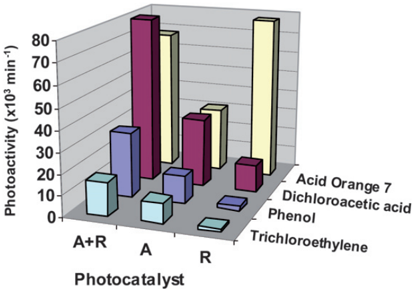
          <figcaption>
            <strong>FIG_009 · pagina 5</strong>
            <p class="caption">Fig. 5 Photoactivity expressed as the initial rate for the decomposition of three different pollutants in aqueous solution using different TiO2 commercial photocatalysts with the structures: anatase (A) supplied by Millenium, rutile (R), or a mixture of rutile and anatase (R + A; Degussa P25). Data taken from ref. 46.</p>
          </figcaption>
          <div class="figbody"><p>Fig. 5 Photoactivity expressed as the initial rate for the decomposition of three different pollutants in aqueous solution using different TiO2 commercial photocatalysts with the structures: anatase (A) supplied by Millenium, rutile (R), or a mixture of rutile and anatase (R + A; Degussa P25). Data taken from ref. 46.</p></div>
        </figure>

        <figure>
          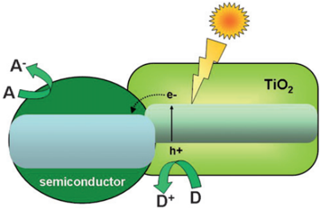
          <figcaption>
            <strong>FIG_010 · pagina 7</strong>
            <p class="caption">Fig. 6 Mechanism for charge separation on TiO2 coupled with a different semiconductor.</p>
          </figcaption>
          <div class="figbody"><p>Fig. 6 Mechanism for charge separation on TiO2 coupled with a different semiconductor.</p></div>
        </figure>

        <figure>
          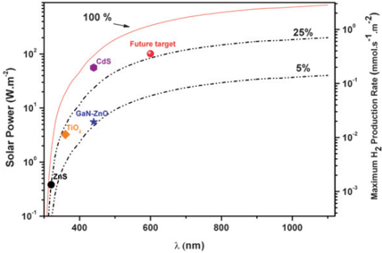
          <figcaption>
            <strong>FIG_011 · pagina 8</strong>
            <p class="caption">Fig. 7 Incident solar power as a function of the photons wavelength as obtained from the integration of the 1.5 AM reference spectrum 74 . Dashed lines represent the solar power accumulated at each wavelength considering photon efficiencies of 5% and 25%. The different symbol marks some of the current or future achievements of photocatalysis for H2 production using TiO2, ZnS, CdS or (Ga0.88Zn0.12)(N0.88O0.12) as photocatalyst. It should be noted that these values are significantly overestimated because total photon absorption is considered and consequently H2 production rates would be appreciably lower in practice.</p>
          </figcaption>
          <div class="figbody"><p>Fig. 7 Incident solar power as a function of the photons wavelength as obtained from the integration of the 1.5 AM reference spectrum 74 . Dashed lines represent the solar power accumulated at each wavelength considering photon efficiencies of 5% and 25%. The different symbol marks some of the current or future achievements of photocatalysis for H2 production using TiO2, ZnS, CdS or (Ga0.88Zn0.12)(N0.88O0.12) as photocatalyst. It should be noted that these values are significantly overestimated because total photon absorption is considered and consequently H2 production rates would be appreciably lower in practice.</p></div>
        </figure>

        <figure>
          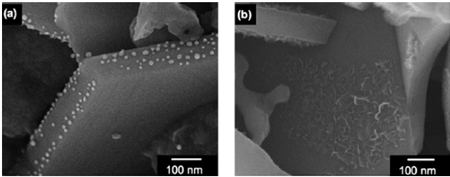
          <figcaption>
            <strong>FIG_012 · pagina 9</strong>
            <p class="caption">Fig. 8 SEM images of (a) Au and (b) NiO x loaded on BaLa4Ti4O15 photocatalysts by a photo-deposition method. (Reproduced from ref. 94).</p>
          </figcaption>
          <div class="figbody"><p>Fig. 8 SEM images of (a) Au and (b) NiO x loaded on BaLa4Ti4O15 photocatalysts by a photo-deposition method. (Reproduced from ref. 94).</p></div>
        </figure>

        <figure>
          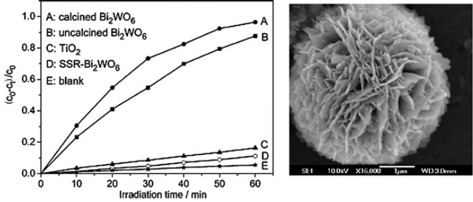
          <figcaption>
            <strong>FIG_013 · pagina 13</strong>
            <p class="caption">Fig. 9 Left panel: Photocatalytic degradation of aqueous rhodamine B over flower-shaped Bi2WO6 (A); uncalcined (B); TiO2 Degussa P25 (C); and solid-state synthesized Bi2WO6 (D). Right: SEM image of uncalcined hydrothermally treated Bi2WO6 superstructure. Figure adapted from ref. 143.</p>
          </figcaption>
          <div class="figbody"><p>Fig. 9 Left panel: Photocatalytic degradation of aqueous rhodamine B over flower-shaped Bi2WO6 (A); uncalcined (B); TiO2 Degussa P25 (C); and solid-state synthesized Bi2WO6 (D). Right: SEM image of uncalcined hydrothermally treated Bi2WO6 superstructure. Figure adapted from ref. 143.</p></div>
        </figure>

        <figure>
          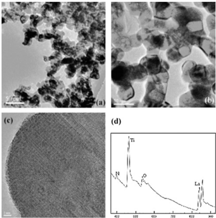
          <figcaption>
            <strong>FIG_014 · pagina 16</strong>
            <p class="caption">Fig. 10 Transmission electron micrographs of the oxynitride nanoparticles ammonolyzed at (a) 800  C and (b) 1000  C. In (c) a high resolution TEM image of the sample treated in NH3 at 800  C is shown. In (d) a typical electron energy loss spectrum clearly shows the presence of nitrogen in the crystallites. (Reproduced from ref. 177).</p>
          </figcaption>
          <div class="figbody"><p>Fig. 10 Transmission electron micrographs of the oxynitride nanoparticles ammonolyzed at (a) 800  C and (b) 1000  C. In (c) a high resolution TEM image of the sample treated in NH3 at 800  C is shown. In (d) a typical electron energy loss spectrum clearly shows the presence of nitrogen in the crystallites. (Reproduced from ref. 177).</p></div>
        </figure>

        <figure>
          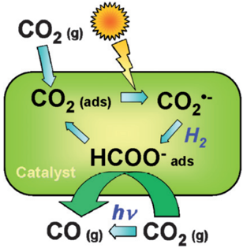
          <figcaption>
            <strong>FIG_015 · pagina 22</strong>
            <p class="caption">Fig. 11 Pictorial diagram showing the proposed mechanism of CO2 photoreduction, using either H2 or CH4 as the reductant, over MgO or ZrO2. From ref. 286-288</p>
          </figcaption>
          <div class="figbody"><p>Fig. 11 Pictorial diagram showing the proposed mechanism of CO2 photoreduction, using either H2 or CH4 as the reductant, over MgO or ZrO2. From ref. 286-288</p></div>
        </figure>
      </div>
  </section>

</main>
</body>
</html>